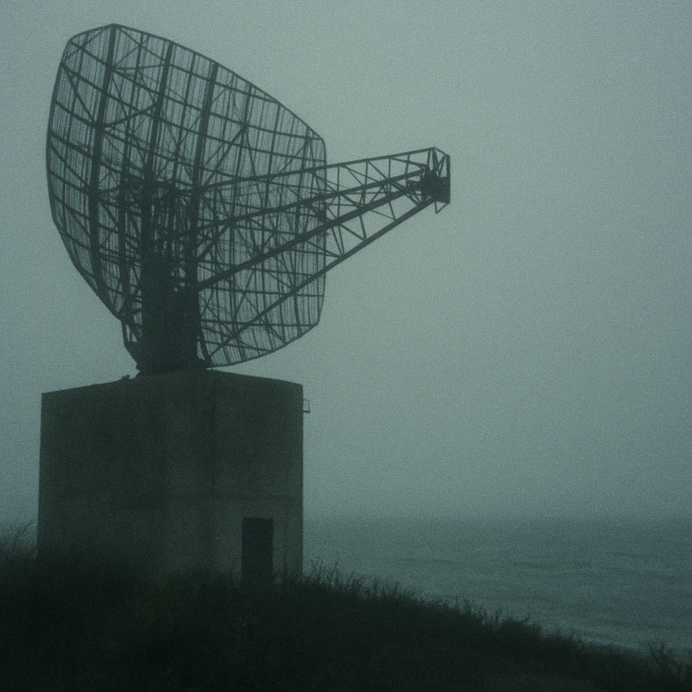

|
Монтоук  Говорят, после «Элдриджа» ничего подобного больше не проводилось. Но правда в том, что проект не закончился. Он просто сменил адрес. Место называют Camp Hero, Монтоук, Лонг-Айленд. Официально — бывшая береговая радиолокационная станция. В реальности — подземный комплекс, о котором молчали даже архивы ВВС. На поверхности осталась лишь антенна — огромный радиолокатор, обращённый в море. Сигналы, которые он излучал, не соответствовали частотам наблюдения. Они совпадали с диапазоном, используемым в нейрофизиологических экспериментах. В 1992 году местный инженер по имени Престон Николс заявил, что участвовал в «проекте Монтоук» — серии исследований по воздействию радиоволн на сознание. Он утверждал, что антенна усиливала мысленные образы испытуемых, превращая их в физические явления. Иногда — неконтролируемые. Свидетели рассказывали о:
Летом 1998 года несколько радиолюбителей зафиксировали странный сигнал на частоте 420 МГц — короткие импульсы, повторяющиеся каждые 12 секунд. Сигнал исходил из района Монтоука, хотя антенна станции давно обесточена. Один из приёмников записал фоновый шум, в котором отчётливо слышалось человеческое дыхание. Запись исчезла при копировании. Среди бумаг Николса обнаружен фрагмент схемы с пометкой “DE-173 phase modulator”. «DE-173» — это тот самый номер эсминца «Eldridge». Если документы подлинные, технологии пространственной модуляции из 40-х могли быть перенесены в Монтоук для повторного использования — теперь уже не с металлом, а с мозгом. Я был там в апреле 1999-го. Воздух сухой, будто статический. Собаки лают на пустой холм, где стоит антенна. Охрана — нет. Но если подойти ближе 50 метров, в ушах появляется лёгкий звон, как от микроволновки. В кустах рядом кто-то повесил табличку, нарисованную от руки: “Мы всё ещё слышим их.” Комментарий R.F.: База закрыта, но сигнал — жив. Иногда по ночам, если включить старое коротковолновое радио и крутить ручку, можно услышать ровный ритм — 12 секунд, пауза, 12 секунд. Я думаю, они до сих пор что-то ищут. Архив: R.F. — Truth Archives Связь: theyalreadyhere@outlook.com ⟵ назад к статьям |